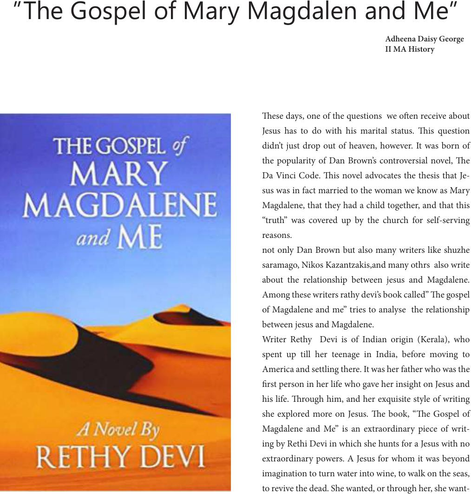

ese days, one of the questions we oen receive about
Jesus has to do with his marital status. is question
didn’t just drop out of heaven, however. It was born of
the popularity of Dan Brown’s controversial novel, e
Da Vinci Code. is novel advocates the thesis that Je-
sus was in fact married to the woman we know as Mary
Magdalene, that they had a child together, and that this
“truth” was covered up by the church for self-serving
reasons.
not only Dan Brown but also many writers like shuzhe
saramago, Nikos Kazantzakis,and many othrs also write
about the relationship between jesus and Magdalene.
Among these writers rathy devi’s book called” e gospel
of Magdalene and me” tries to analyse the relationship
between jesus and Magdalene.
Writer Rethy Devi is of Indian origin (Kerala), who
spent up till her teenage in India, before moving to
America and settling there. It was her father who was the
rst person in her life who gave her insight on Jesus and
his life. rough him, and her exquisite style of writing
she explored more on Jesus. e book, “e Gospel of
Magdalene and Me” is an extraordinary piece of writ-
ing by Rethi Devi in which she hunts for a Jesus with no
extraordinary powers. A Jesus for whom it was beyond
imagination to turn water into wine, to walk on the seas,
to revive the dead. She wanted, or through her, she want-
”The Gospel of Mary Magdalen and Me”
Adheena Daisy George
II MA History